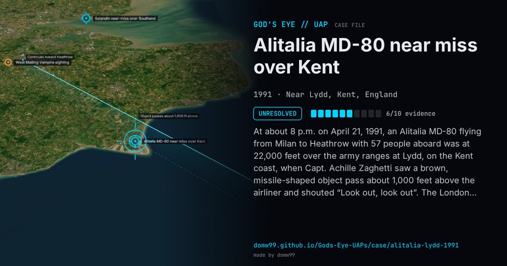

Alitalia MD-80 near miss over Kent

At about 8 p.m. on April 21, 1991, an Alitalia MD-80 flying from Milan to Heathrow with 57 people aboard was at 22,000 feet over the army ranges at Lydd, on the Kent coast, when Capt. Achille Zaghetti saw a brown, missile-shaped object pass about 1,000 feet above the airliner and shouted “Look out, look out”. The London control centre told him it had an unknown target on radar 10 nautical miles behind him. The Ministry of Defence and the Civil Aviation Authority investigated as an airmiss, ruled out a missile, a weather balloon and a rocket, and closed the case unsolved.
Explanation
The Civil Aviation Authority and the Ministry of Defence looked at missiles, weather balloons and rockets and ruled each one out, then closed the inquiry without an answer. The files were released by the National Archives in October 2008.
What was seen
Shape: Brown, missile-shaped object
Witnesses: Capt. Achille Zaghetti, with 57 people aboard
Duration: Seconds
Sources
- Irish Examiner — Pilot reported “missile” near miss, MoD files show (2008)
- Kent Online — MoD reveals Kent X-files (2008)
Browse
- United Kingdom
- 1990s
- Unresolved
- Aviation encounters
- Official government documents
- Pilot and aircrew witnesses
- Radar tracking